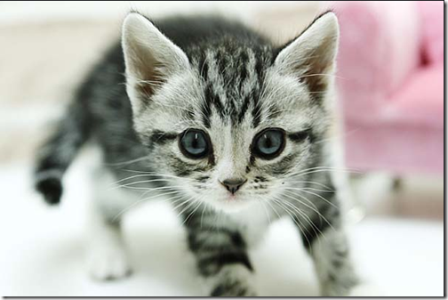

1. 페르시안 고양이
페르시안 고양이는 털이 길고 부드러우며 품격있는 고양이라고 많이들 알게 계시죠? 페르시안 고양이는 다리가 짧고 털은 매우 풍성하고 몸집도 조금은 큰 편이라고 해요
2. 브리티시 숏헤어
브리티시 숏헤어는 다소 심술 맞아 보이는 인상을 가지고 있지만, 의외로 조심스럽고 순한 성격을 가지고 있다고 해요. 브리티시 숏헤어는 소형견보다 크며 무려 8kg까지 나간다는~.. 빵빵한 볼과 오통통한 손발이 너무 매력적이에요!
3. 러시안 블루

그야말로 회색 털이 매력적인 러시안 블루. 짧은 청색 털에 무늬가 전혀 없는 고양이! 매우 조용하고 온순하여 거의 울지 않고 그 소리도 작아서 잘 들리지 않는다고 해요 집에서 키우시기에는 안성 맞춤이죠~
4. 노르웨이 숲
노르웨이숲 고양이의 또 다른 이름은 노르웨이지안포레스트캣이라고 해요! 보시다시피 털은 많고 길어서 장모종이예요. 일반 고양이에 비해 몸이 크고 다리가 튼튼하며 털이 길어 우아한 느낌을 주는 고양이 예요 노르웨이숲은 덩치가 크고 정말 튼튼해서 매우 활동적이래요~
5. 터키쉬 앙고라
터키쉬 앙고라는 하~얀 털을 가지고 있는 특징이 있어요^^ 놀랍게도 대부분의 사람들이 말하기를 터키쉬앙고라가 고양이들 중 가장 똑똑한 고양이라고 하네요.. 범상치 않은 기품의 외모에.. 머리까지 제일 좋은 터키쉬앙고라.. 정도 많고 충성심도 강하다고 해요
6. 샴 고양이
태어났을 때는 몸 전체가 흰색 혹은 크림색이지만 점차적으로 짙어진다고 합니다. 전 특히 회색빛에 푸른눈이 참 신비롭게 느껴지더라구요^^ 샴 고양이는 사람의 관심을 끄는 걸 좋아하기 때문에 강아지처럼 적극적인 애정 표현을 좋아한다고 하네요 감수성도 예민해서 가끔은 공격적이거나 신경질적인 반응을 보이기도 한대요.
7. 스코티시 폴드
스코티시폴드의 가장 큰 특징은 귀가 접혀있죠! 스코티시폴드는 귀가 접힌 모양에 따라 세가지로 분류된답니다. 싱글폴드, 더블 폴드, 트리플 폴드 등등.... 귀가 많이 접힐 수록 트리플 폴드에 가깝다고 보시면되요^^! 싱글폴드의 경우는 귀의 절반정도 접인 정도구, 트리플은 귀가 보이지않을 정도로 접힌 형태쯤?! 그런데 이 귀가 태어나자마자 접혀있는게 아니라 생후 2주에서 4주가 지나면 귀가 접히는지의 여부가 결정나고, 3개월후의 귀가 평생간다고 해요!
8. 셀커크렉스

셀커크렉스 고양이 (고양이 희귀종) 고양이계의 푸들이라는 셀커크렉스 :D 곱슬곱슬한 털과 턱수염을 가진 고양이죠!
9. 뱅갈 고양이!
뱅갈 고양이는 표범과 흡사한 외모를 가지고 있는데요. 그래서 많은 분들이 무섭지 않을까 사납지 않을까 하시는데 전혀~ 그렇지 않다고 해요 오히려 뱅갈 고양이는 사람을 좋아하며 친근하게 지내려고 하고 호기심도 많은 아이입니다. 그리고 고양이들은 물을 싫어하지만, 뱅갈 고양이는 물을 그렇게 싫어하지는 않는다고 하네요
10. 아메리칸 숏헤어

숏하고 비슷한 무늬라고 생각될 수 있는데요, 겁이 없는 성격으로 뛰어다니는 걸 무척 좋아한다고 해요 모난 구석도 없고 주변 동물들과도 잘 어울린다고 합니다. 단모종의 짧고 두꺼운 털을 갖고 있으며 이 털의 길이는 계절에 따라 달라지고 또 지역에 따라서도 다르다고 하네요 신기하죠잉?ㅎㅎ
숏하고 비슷한 무늬라고 생각될 수 있는데요, 겁이 없는 성격으로 뛰어다니는 걸 무척 좋아한다고 해요 모난 구석도 없고 주변 동물들과도 잘 어울린다고 합니다. 단모종의 짧고 두꺼운 털을 갖고 있으며 이 털의 길이는 계절에 따라 달라지고 또 지역에 따라서도 다르다고 하네요 신기하죠잉?ㅎㅎ
11. 아비시니안
이 고양이는 에티오피아의 옛이름인 아비시니아에서 따온 이름이래요. 정확한 기원은 알 수 없지만 고대이집트파라오의 궁전에서 길러졌다는 설도 있어요. 발은 작고, 귀는 크며 이마에 M형의 고리무늬가 있는게 특징이에요!단모종에 늘씬한 몸매에 비해 근육이 잘 형성되어있고, 성격이 온순하며 몸짓이 나긋나긋해 우아한 고양이 중 하나라고 해요.성격은 애교가 많지는 않지만 영리하고 충성심이 강하다고 합니다.
12. 먼 치킨

먼치킨의 가장 큰 특징은! 네 정말 귀여운 짧은 다리와 긴 허리져! 개냥이라 불러도 좋을 정도로 주인을 졸졸졸 따라다니며 응석부리기를 좋아하고, 어릴 때의 성격이 성묘가 되어서도 쭉 그대로 가는 경우가 많다고 해용
13. 사바나캣

사바나캣은 특이하게 산책이 가능하다는 특징을 가지고 있어요. 저희 집 고양이 산책하면서 같이 뛰어놀고(?) 싶은데 사바나캣 기르시는 분들 정말 부럽네요... 몸집이 다른 고양이에 비해 2배나 더 크다는데 실제로 보면 무서울 듯ㅎㅎㅎㅎ 그런데 몸집과는 달리 애교도 많고 개냥이라고 하니 다행이네요.
14. 메인쿤
1m가 넘는 거대한 몸과 덥수룩한 털, 무엇보다 굵고 긴 꼬리 때문에 너구리로 오해도 많이 받는데요 :) 털이 많고 긴 장모종에 속하지만 털 관리가 정말 쉽다고해요. 털이 복슬복슬한 것에 비해 잘 엉키지 않아 2~3개월에 한번씩 빗어주면 된다고 합니다. 설에 따르면 너구리와 혼혈(?)이라는 설도 있데요 ㅋㅋㅋ 메인쿤은 대형묘이지만 성장이 느린 편이라 3~4년정도 지나야 다 자랐다고 볼 수 있다고해요. 큰 몸집과 다르게 성격은 매우 차분하고 상냥한 성격이에요!
15. 코리안 숏헤어 (korean shorthair)

일명 코숏이라고도 불리는 코리안 숏헤어. 흔히 동네에서 볼 수 있는 길고양이를 지칭하는 말이죠! 분양을 알아보다보면 길에서 어미를 잃거나 어려움에 빠진 코숏을 구해서 기르시다가 사정상 내놓은 분들이 참 많더라구요ㅠㅠ